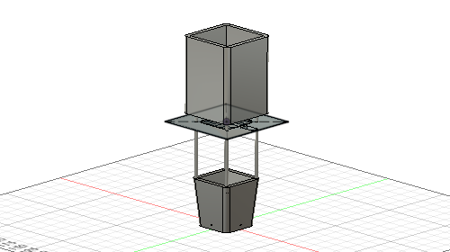

試作品1では水の制御がうまく行かなかった。 サーボモーターを置いていた台が不安定だった為今回は、台を大きくしてサーボモータを安定させた。
水を入れるタンクが小さかった為、タンクを大きくした。
土壌センサーには、これを使用する。

https://akizukidenshi.com/catalog/g/gM-07047/
作成した完成モデルがこれ

サーボモーターの部分を改良したがやはりうまく行かない。
土壌センサーを変更したが、土の中にいれておいたところだんだん腐食してしまい、数値がうまく取れないことが分かった。
このモデルは水のタンクを上におき、タワー型にしているためどうしても不安定になってしまっている。